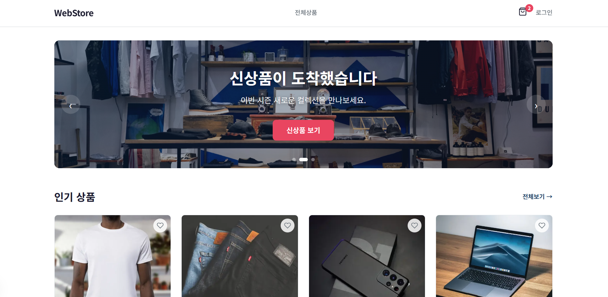
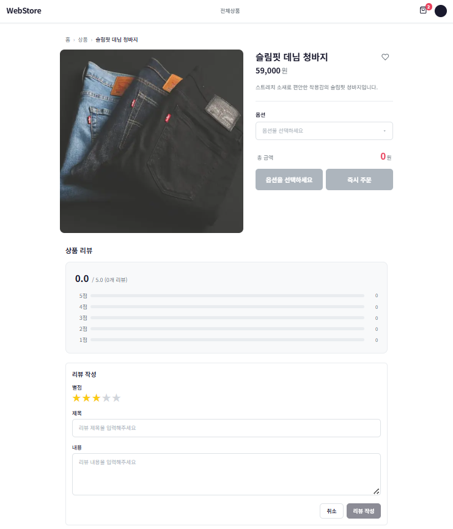
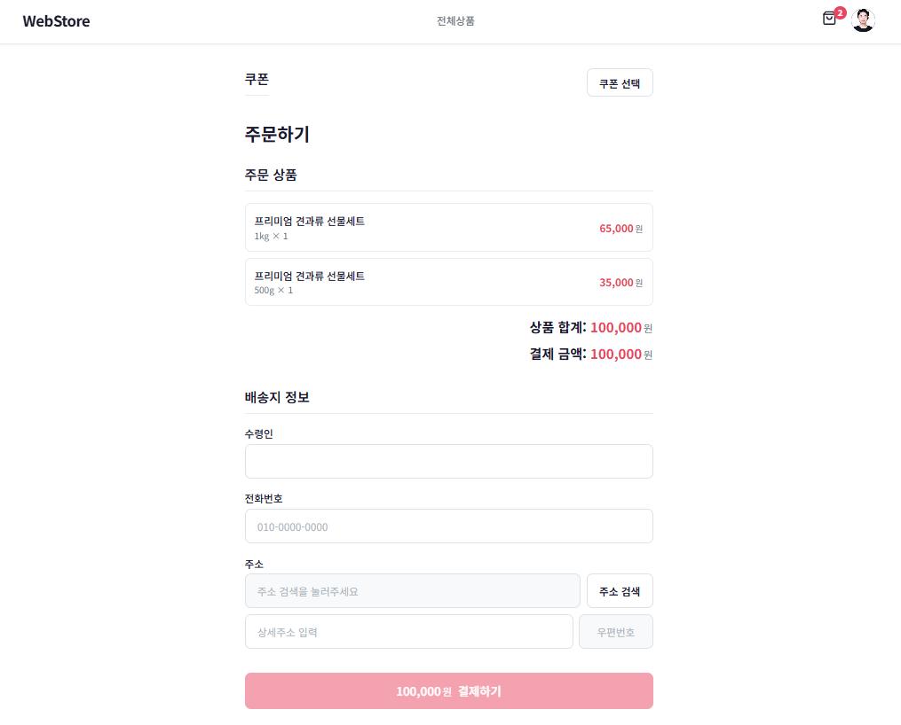
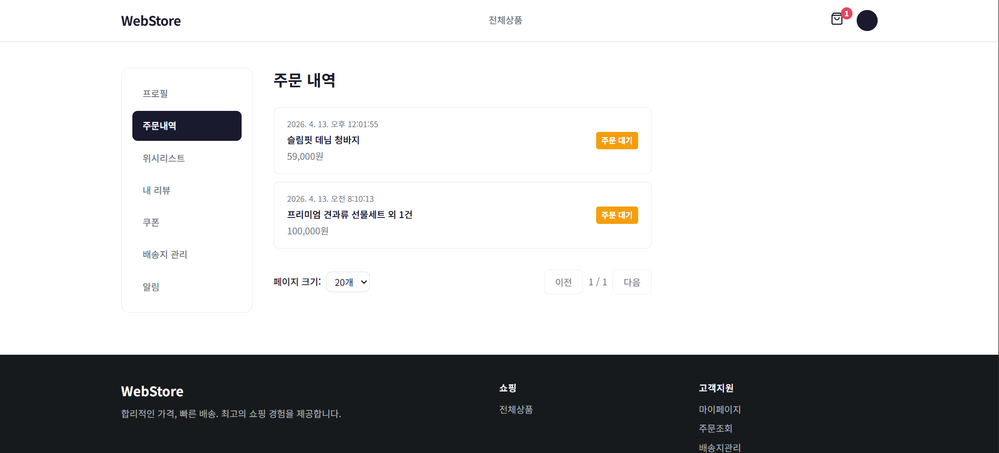
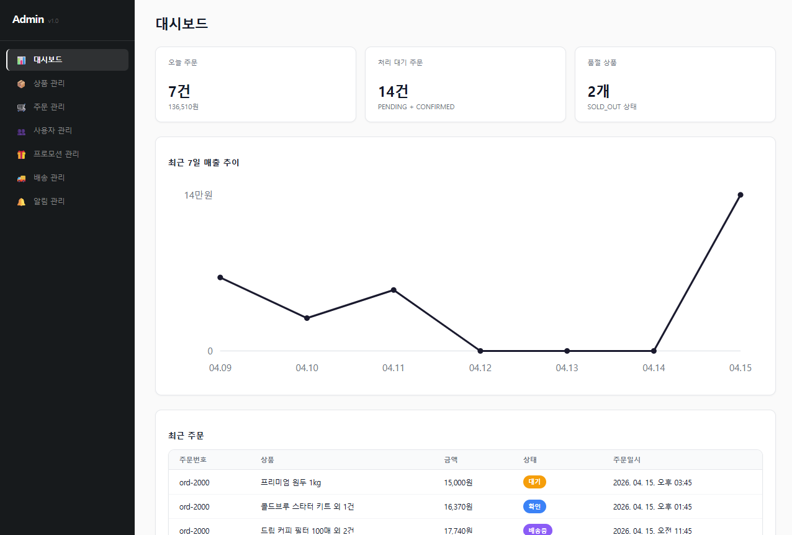
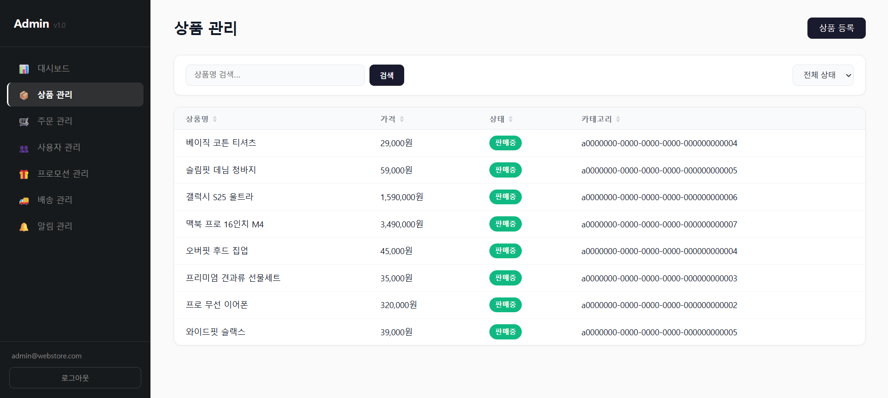
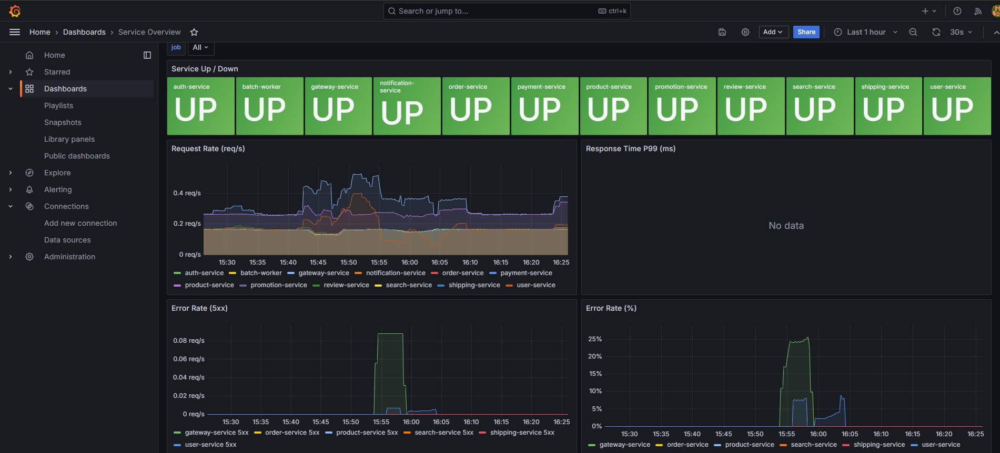

Portfolio · 2026
E-Commerce
Microservices Platform
도메인 기반 마이크로서비스 아키텍처로 설계된
End-to-End 이커머스 플랫폼
Java 21
Spring Boot 3.4
Next.js 15
React 19
TypeScript 5.5
PostgreSQL 16
Apache Kafka 3.7
Redis 7
Elasticsearch 8.15
Kubernetes
Docker Compose
Prometheus · Grafana · Loki · Jaeger
Section 01
프로젝트 개요
상품 카탈로그·주문·결제·배송·리뷰·알림·검색·프로모션을 포함하는 B2C 이커머스 플랫폼입니다. 12개의 백엔드 서비스와 2개의 프론트엔드 앱이 모노레포로 운영되며, 각 서비스는 도메인 특성에 맞는 서로 다른 아키텍처 패턴을 채택합니다.
핵심 지표 한눈에 보기
Services
12 + 2
백엔드 마이크로서비스 12개 · 프론트 앱 2개 (Web Store, Admin)
Architecture Patterns
3 패턴
DDD · Hexagonal · Layered — 도메인 복잡도에 따라 선택 적용
Test Coverage (admin)
84.3%
admin-dashboard 라인 커버리지 (Vitest + RTL, 420 tests)
Lighthouse (web-store)
99/100
홈 LCP 1.0s · CLS 0 · TBT 0ms (Desktop)
설계 원칙 (Highlights)
- 도메인 중심 분리 — Bounded Context마다 독립 서비스 + 독립 DB. 12개 서비스 모두 Database-per-Service 적용.
- 이벤트 기반 통신 — 동기 호출 최소화, Apache Kafka + Outbox Pattern으로 트랜잭션 일관성 확보.
- 아키텍처 패턴의 의도적 다양성 — 모든 서비스에 동일 패턴을 강제하지 않고 도메인 복잡도에 맞춰 DDD/Hexagonal/Layered 선택.
- Spec-Driven Development — 스펙 → 계약 → 태스크 → 구현 → 리뷰의 명시적 워크플로우.
specs/가 단일 진실 공급원.
- Full Observability — Prometheus(메트릭) + Grafana(시각화) + Loki(로그) + Jaeger(트레이스) 통합 모니터링.
- K8s Production-Ready — NetworkPolicy(Default-Deny) · PodDisruptionBudget · ConfigMap 기반 배포.
왜 이 프로젝트가 의미 있는가
단순히 "마이크로서비스를 잘게 쪼갠 프로젝트"가 아니라, "왜 이 서비스에는 DDD를, 저 서비스에는 Layered를 적용했는가"에 대한 명시적 근거(specs/services/<svc>/architecture.md)가 있는 프로젝트입니다. 동시에 분류(taxonomy) 기반 규칙 시스템의 첫 dogfood로, 후속 프로젝트의 템플릿이 될 구조를 검증합니다.
Section 02
시스템 아키텍처
전체 토폴로지: 두 개의 프론트엔드 클라이언트가 단일 게이트웨이를 통과해 12개 백엔드 서비스에 도달하며, 서비스 간 통신은 Kafka 이벤트로 비동기화되어 있습니다.
graph TB
subgraph Clients
WS[Web Store
Next.js 15 :3000]
AD[Admin Dashboard
Next.js 15 :3001]
end
subgraph Gateway
GW[Gateway Service
Spring Cloud Gateway :8080
JWT / Rate Limit]
end
subgraph Core
AUTH[Auth :8081]
PRODUCT[Product :8082]
USER[User :8084]
ORDER[Order :8086]
PROMO[Promotion :8092]
end
subgraph Integration
PAY[Payment :8087]
SEARCH[Search :8085]
NOTI[Notification :8093]
SHIP[Shipping :8090]
end
subgraph Support
REVIEW[Review :8091]
BATCH[Batch Worker :8088]
end
subgraph Infrastructure
KAFKA[Apache Kafka]
REDIS[Redis]
ES[Elasticsearch]
end
WS --> GW
AD --> GW
GW --> AUTH
GW --> PRODUCT
GW --> USER
GW --> ORDER
GW --> PAY
GW --> SEARCH
GW --> SHIP
GW --> REVIEW
GW --> PROMO
GW --> NOTI
GW --> REDIS
ORDER --> KAFKA
PAY --> KAFKA
PRODUCT --> KAFKA
SHIP --> KAFKA
PROMO --> KAFKA
AUTH --> KAFKA
KAFKA --> NOTI
KAFKA --> SEARCH
KAFKA --> BATCH
SEARCH --> ES
AUTH --> REDIS
PAY -. Toss Payments .-> EXT_PG[External PG]
NOTI -. Email/SMS/Push .-> EXT_MSG[External Channels]
그림 2-1. 시스템 전체 토폴로지 — Gateway 단일 진입점 + Kafka 기반 이벤트 버스
레이어별 역할
- Clients — 고객용 Web Store와 운영자용 Admin Dashboard, 둘 다 Next.js 15 + React 19로 구현되며 같은 게이트웨이를 공유합니다.
- Gateway — 모든 외부 트래픽의 단일 진입점. JWT 검증, Redis 기반 IP 토큰 버킷 Rate Limiting, 라우팅을 담당.
- Core / Integration / Support — 도메인 책임에 따라 분류. 외부 시스템 의존이 큰 서비스는 Hexagonal로 격리.
- Infrastructure — Kafka(이벤트 버스) · Redis(캐시/세션/Rate Limit) · Elasticsearch(검색).
Section 03
서비스 카탈로그
12개 백엔드 서비스 + 2개 프론트엔드 앱. 각 서비스는 독립 포트, 독립 데이터베이스, 명시적 아키텍처 패턴을 갖습니다.
Backend (Spring Boot 3.4 / Java 21)
| Service | Port | Architecture | 역할 | 핵심 패턴 |
|---|
| Gateway | 8080 | Layered | API 라우팅, 인증, Rate Limiting | Spring Cloud Gateway, Redis |
| Auth | 8081 | Layered | 회원가입, JWT 인증, 세션 관리 | JWT, Redis Session |
| Product | 8082 | DDD | 상품 카탈로그, 재고 관리 | Aggregate, Domain Events |
| User | 8084 | Layered | 프로필, 주소, 위시리스트 | CRUD, Preferences |
| Search | 8085 | Hexagonal | 상품 검색, 필터링 | Elasticsearch, Event Indexing |
| Order | 8086 | DDD | 주문 생성, 상태 추적, 취소 | Saga, Outbox Pattern |
| Payment | 8087 | Hexagonal | 결제 승인, 환불 | Toss Payments, Port/Adapter |
| Batch Worker | 8088 | Layered | 배치 작업, 데이터 집계 | Spring Batch, Scheduling |
| Shipping | 8090 | Layered | 배송 추적, 상태 관리 | Outbox Pattern |
| Review | 8091 | Layered | 상품 리뷰, 평점 | Cross-service REST |
| Promotion | 8092 | DDD | 프로모션, 쿠폰 | Outbox Pattern |
| Notification | 8093 | Hexagonal | 알림 (Email/SMS/Push) | Multi-channel Consumer |
Frontend (Next.js 15 / React 19 / TypeScript)
| App | Port | Architecture | 역할 |
|---|
| Web Store | 3000 | Feature-Sliced Design | 고객 쇼핑 (검색, 장바구니, 주문, 결제) |
| Admin Dashboard | 3001 | Feature-based Layered | 관리자 (상품·주문·프로모션·알림 관리) |
공유 라이브러리
| Library | 역할 |
|---|
java-common | 공통 유틸리티 |
java-web | HTTP 예외 처리, Jackson 설정 |
java-messaging | Kafka + Outbox Pattern 구현 |
java-observability | Actuator + Micrometer + OpenTelemetry |
java-security | 인증·보안 유틸리티 |
@repo/api-client · @repo/types · @repo/ui | 프론트 공통 API 클라이언트, 타입, UI 컴포넌트 |
Section 04
아키텍처 패턴 선택
"모든 서비스에 같은 패턴을 강제하면 단순한 CRUD에는 과잉, 복잡한 도메인에는 부족"이라는 판단 아래, 도메인 복잡도에 맞춰 세 가지 패턴 중 적합한 것을 선택했습니다.
DDD — 복잡한 비즈니스 규칙
적용: Order · Product · Promotion. Aggregate 일관성과 도메인 이벤트가 1급 시민.
이유: 주문 라이프사이클(PENDING → CONFIRMED → SHIPPED → DELIVERED)이나 재고 차감같이 불변식이 강한 영역에서 도메인 모델이 비즈니스 언어를 그대로 표현하도록 함.
Hexagonal — 외부 시스템 연동 중심
적용: Payment(Toss Payments) · Search(Elasticsearch) · Notification(Email/SMS/Push).
이유: 외부 어댑터가 교체될 가능성이 크고 테스트 격리가 중요. Port/Adapter로 핵심 도메인을 외부 의존성으로부터 보호.
Layered — 단순한 CRUD
적용: Auth · User · Shipping · Review · Batch · Gateway.
이유: 비교적 단순한 데이터 흐름에 DDD를 강제하면 보일러플레이트만 늘어남. 빠른 구현과 가독성을 우선.
graph TB
subgraph DDD["DDD — 복잡한 도메인"]
direction LR
DDD_API[API] --> DDD_APP[Application]
DDD_APP --> DDD_DOMAIN[Domain
Aggregate · Event]
DDD_DOMAIN --> DDD_INFRA[Infrastructure]
end
subgraph HEX["Hexagonal — 외부 연동 격리"]
direction LR
HEX_ADAPTER_IN[Web Adapter] --> HEX_IN[Inbound Port]
HEX_IN --> HEX_CORE[Core Domain]
HEX_CORE --> HEX_OUT[Outbound Port]
HEX_OUT --> HEX_ADAPTER_OUT[External Adapter]
end
subgraph LAY["Layered — 단순 CRUD"]
direction LR
LAY_CTRL[Controller] --> LAY_SVC[Service]
LAY_SVC --> LAY_REPO[Repository]
LAY_REPO --> LAY_DB[(Database)]
end
DDD ~~~ HEX
HEX ~~~ LAY
그림 4-1. 세 가지 아키텍처 패턴의 레이어 구조 비교
각 서비스의 패턴 선택 근거는 specs/services/<service>/architecture.md에 명시되어 있어, "왜 이렇게 설계했는가"의 추적성이 코드와 함께 버전 관리됩니다.
Section 05
이벤트 기반 통신
서비스 간 통신은 Apache Kafka 이벤트로 이루어지며, 트랜잭션 일관성을 위해 Outbox Pattern을 적용합니다. "DB에 비즈니스 데이터 저장" + "이벤트 발행"을 단일 트랜잭션으로 묶어, 부분 성공으로 인한 데이터 불일치를 원천 차단합니다.
주문 → 결제 → 배송 Saga
sequenceDiagram
actor Customer
participant Order as Order Service
participant Kafka
participant Payment as Payment Service
participant Shipping as Shipping Service
participant Notification as Notification Service
Customer->>Order: POST /api/orders
activate Order
Order->>Order: 주문 생성 + Outbox 저장 (단일 TX)
Order-->>Kafka: OrderPlaced
deactivate Order
Kafka-->>Payment: OrderPlaced
activate Payment
Payment->>Payment: 결제 처리 (Toss Payments)
Payment-->>Kafka: PaymentCompleted
deactivate Payment
Kafka-->>Order: PaymentCompleted
activate Order
Order->>Order: 주문 확정 (CONFIRMED)
Order-->>Kafka: OrderConfirmed
deactivate Order
Kafka-->>Shipping: OrderConfirmed
activate Shipping
Shipping->>Shipping: 배송 시작
Shipping-->>Kafka: ShippingStatusChanged
deactivate Shipping
Kafka-->>Notification: OrderPlaced
Kafka-->>Notification: PaymentCompleted
Kafka-->>Notification: ShippingStatusChanged
Notification->>Customer: 알림 발송 (Email/SMS/Push)
그림 5-1. 주문 → 결제 → 배송 → 알림 Saga 흐름
주요 도메인 이벤트
| 도메인 | 이벤트 |
|---|
| Auth | UserSignedUp · LoginFailed · SessionLimitExceeded |
| Order | OrderPlaced · OrderConfirmed · OrderCancelled |
| Payment | PaymentCompleted · PaymentFailed · RefundInitiated |
| Product | ProductCreated · ProductUpdated · StockChanged |
| Shipping | ShippingStatusChanged |
| Promotion | CouponIssued · PromotionActivated |
Section 06
상품 → 검색 인덱싱
상품 카탈로그(PostgreSQL)와 검색 인덱스(Elasticsearch)는 Kafka 이벤트로 비동기 동기화됩니다. 한국어 검색 품질을 위해 Nori analyzer를 적용 (ADR-005).
sequenceDiagram
actor Admin
participant Product as Product Service
participant Kafka
participant Search as Search Service
participant ES as Elasticsearch
Admin->>Product: POST /api/admin/products
activate Product
Product->>Product: 상품 저장 (PostgreSQL)
Product-->>Kafka: ProductCreated
deactivate Product
Kafka-->>Search: ProductCreated
activate Search
Search->>ES: Index Document (Nori analyzer)
deactivate Search
Admin->>Product: PATCH /api/admin/products/{id}
activate Product
Product->>Product: 상품 수정
Product-->>Kafka: ProductUpdated
deactivate Product
Kafka-->>Search: ProductUpdated
activate Search
Search->>ES: Update Document
deactivate Search
그림 6-1. 상품 변경 이벤트의 검색 인덱스 반영 흐름
Database-per-Service
각 서비스는 자기 도메인의 데이터를 자기 DB에서만 관리합니다. 다른 서비스가 그 데이터를 필요로 하면 API 호출 또는 이벤트 구독으로만 접근합니다.
graph TB
subgraph PG["PostgreSQL × 10 (Database-per-Service)"]
direction LR
A[Auth] --> A_DB[(auth_db
:5432)]
B[Product] --> B_DB[(product_db
:5433)]
C[Order] --> C_DB[(order_db
:5434)]
D[Payment] --> D_DB[(payment_db
:5435)]
F[Batch] --> F_DB[(batch_db
:5436)]
E[User] --> E_DB[(user_db
:5437)]
G[Shipping] --> G_DB[(shipping_db
:5438)]
H[Review] --> H_DB[(review_db
:5439)]
I[Promotion] --> I_DB[(promotion_db
:5440)]
J[Notification] --> J_DB[(notification_db
:5441)]
end
subgraph OTHER["전용 스토리지"]
direction LR
K[Search] --> K_ES[(Elasticsearch
:9200)]
L[Gateway] --> L_REDIS[(Redis
:6379)]
end
그림 6-2. Database-per-Service — 10개 PostgreSQL 인스턴스 + Elasticsearch + Redis
Section 07
인프라 & 옵저버빌리티
메트릭 · 로그 · 트레이스 세 가지 신호를 모두 수집하고, Grafana에서 통합 뷰로 관찰합니다.
graph TB
subgraph Application
SVC1[Auth]
SVC2[Product]
SVC3[Order]
SVC_N[... 9 more services]
end
subgraph Observability
PROM[Prometheus
:9090
Metrics]
GRAFANA[Grafana
:3100
Dashboards]
LOKI[Loki
:3101
Logs]
PROMTAIL[Promtail
Log Collector]
JAEGER[Jaeger
:16686
Tracing]
ALERT[AlertManager
:9094]
end
SVC1 -- "/actuator/prometheus" --> PROM
SVC2 -- "/actuator/prometheus" --> PROM
SVC3 -- "/actuator/prometheus" --> PROM
SVC_N -- "/actuator/prometheus" --> PROM
SVC1 -- "OTLP traces" --> JAEGER
SVC2 -- "OTLP traces" --> JAEGER
SVC3 -- "OTLP traces" --> JAEGER
PROMTAIL -- "Docker logs" --> LOKI
PROM --> GRAFANA
LOKI --> GRAFANA
JAEGER --> GRAFANA
PROM --> ALERT
그림 7-1. 옵저버빌리티 스택 — Prometheus + Grafana + Loki + Jaeger
Kubernetes 배포 토폴로지
graph TB
subgraph K8s Cluster
ING[Ingress Controller
+ Security Headers]
subgraph Pods
GW_POD[Gateway + PDB]
AUTH_POD[Auth + PDB]
PRODUCT_POD[Product + PDB]
ORDER_POD[Order + PDB]
PAY_POD[Payment + PDB]
WS_POD[Web Store + PDB]
AD_POD[Admin Dashboard + PDB]
end
NP[NetworkPolicy
Default Deny + Per-Service Allow]
subgraph External
EXT_DB[(PostgreSQL × 10)]
EXT_KAFKA[Kafka]
EXT_REDIS[Redis]
EXT_ES[Elasticsearch]
end
end
ING --> GW_POD
GW_POD --> AUTH_POD
GW_POD --> PRODUCT_POD
GW_POD --> ORDER_POD
GW_POD --> PAY_POD
AUTH_POD --> EXT_DB
PRODUCT_POD --> EXT_DB
ORDER_POD --> EXT_DB
ORDER_POD --> EXT_KAFKA
NP -. Zero Trust .-> AUTH_POD
NP -. Zero Trust .-> ORDER_POD
그림 7-2. Kubernetes 배포 — PDB · NetworkPolicy(Zero Trust)
Section 08
품질 지표
코드 품질, 테스트 커버리지, 성능 — 세 축에서 측정 가능한 지표로 관리합니다.
테스트 전략
| 레이어 | 도구 | 범위 |
|---|
| Unit / Integration | JUnit 5, Testcontainers | 백엔드 서비스 로직, DB 통합 |
| Contract | Custom Contract Tests | API 계약 검증 |
| Component | Vitest, React Testing Library | 프론트엔드 컴포넌트 |
| E2E | Playwright (Chromium) | 브라우저 골든 플로우 검증 |
| Load | k6 | 성능 (P95 < 500ms, Error < 1%) |
프론트엔드 커버리지 (v8 provider)
| App | Lines | Statements | Functions | Branches | Tests |
|---|
admin-dashboard | 84.33% | 80.89% | 73.29% | 79.09% | 420 |
web-store | 81.15% | 80.07% | 77.01% | 81.38% | — |
성능 측정 결과
web-store 홈페이지 (Lighthouse Desktop)
홈에 ISR(revalidate=60)을 적용하고 HeroBanner 이미지를 next/image(AVIF/WebP 자동 변환)로 전환한 뒤 실측.
Performance
99/100
Lighthouse Desktop
| 변경 | Before | After | 효과 |
|---|
홈 force-dynamic → revalidate=60 | 94–263 ms/req | 8–15 ms/req | ~15× |
| Hero 이미지 JPEG → WebP | 340 KB / 423 ms | 92 KB / 13 ms | −73% / ~32× |
Redis Cache (product-service)
QueryProductService.findAll/findById에 @Cacheable + RedisCacheConfiguration(TTL 60s) 적용. 쓰기 경로 5곳은 @CacheEvict로 일관성 보장.
| 상황 | 샘플 수 | 중앙값 | 평균 |
|---|
| MISS (DB 조회 + 캐시 저장) | 5 | 122 ms | 122 ms |
| HIT (Redis 읽기) | 10 | 32 ms | 38 ms |
| 개선 | — | ~3.8× | ~3.2× |
Gateway Rate Limiting (실측)
Spring Cloud Gateway RequestRateLimiter + Redis 토큰 버킷. /api/auth/**는 10 req/s · burst 20으로 가장 엄격.
| 라우트 | Replenish | Burst | 의도 |
|---|
/api/auth/** | 10 req/s | 20 | 크리덴셜 스터핑 / 브루트포스 방어 |
/api/products/** 등 | 100 req/s | 200 | 일반 조회·쓰기 |
버스트 테스트 (N=30 rapid POST): 처음 20개 통과 → 21~30번째 429 Too Many Requests. burstCapacity=20 설정과 정확히 일치.
Section 09
코드 품질: 리팩토링 사례
실제 누적된 중복 제거 및 구조 개선 작업. "언제 추상화하고 언제 하지 않는가"의 판단 기준이 함께 기록되어 있다는 점이 핵심입니다.
Case Study — admin-dashboard 뮤테이션 훅 팩토리화
문제
5개 도메인(product · promotion · notification · order · shipping)에 걸쳐 12개의 useMutation 기반 훅이 존재. 각 훅이 useMutation + useQueryClient.invalidateQueries + alertError 보일러플레이트를 반복.
접근
실제 중복이 있는 영역에만 공용 훅 useInvalidatingMutation 신설. 각 훅은 mutationFn · invalidate 키 · errorMessage · 선택적 커스텀 핸들러만 선언.
결과
| 지표 | Before | After | 변화 |
|---|
| 뮤테이션 훅 평균 LOC | ~18줄 | ~11줄 | −39% |
| 에러 처리 중앙 집중 | 각 훅에 중복 | 팩토리 1곳 | — |
| 테스트 (admin-dashboard) | 420 passed | 420 passed | 무회귀 |
의도적으로 추상화하지 않은 것
use-*-form.ts 3개 훅은 필드·검증·제출·라우팅이 각기 달라 공용화 시 제네릭 지옥·억지 추상화가 됨 → 원형 유지- 191줄짜리
TemplateForm은 단일 Section 평탄 구조라 분해 시 프롭 드릴링만 증가 → 유지
- 공용
FormField 래퍼는 실제 소비자가 1곳뿐이라 제공하지 않음
"Three similar lines is better than a premature abstraction" — 추상화는 반복이 진짜로 비용이 될 때만 하고, 그렇지 않으면 명시성을 유지한다는 원칙을 실제 판단에 적용한 기록.
플레이키 테스트 원인 분석
<input type="date">에 userEvent.type을 쓰면 문자 단위 키스트로크가 중간값을 무효 날짜로 만들어 병렬 부하 시 타이밍 플레이키를 유발. fireEvent.change로 전환해 완성된 값을 단일 이벤트로 주입하여 안정화.
주요 ADR (Architecture Decision Records)
| 번호 | 주제 |
|---|
| ADR-001 | 마이크로서비스 vs 모놀리식 — MSA 선택 근거 |
| ADR-002 | Saga vs 분산 트랜잭션 — Saga 채택 이유 |
| ADR-003 | 프론트엔드 이원화 전략 (Web Store / Admin) |
| ADR-004 | Taxonomy 기반 룰 시스템 |
| ADR-005 | 한국어 검색 — Nori analyzer 채택 |
Section 10
화면 — Web Store

홈 — Elasticsearch 기반 검색 · 카테고리 필터 · ISR 적용

상품 상세 — 옵션 선택 · 리뷰 · 위시리스트
Section 10 · 계속
화면 — 결제 & 주문

체크아웃 — 배송지 입력 · Toss Payments 결제 연동

주문 내역 — 상태 추적 (PENDING → CONFIRMED → SHIPPED → DELIVERED)
Section 10 · 계속
화면 — Admin & Observability

관리자 대시보드 — 주요 KPI · 최근 주문

상품 관리 — ProductCreated 이벤트 발행 → Search 인덱스 실시간 반영

Grafana — Prometheus 메트릭 · Loki 로그 · Jaeger 트레이스 통합 뷰
Section 11
개발 방법론
"코드가 곧 진실"이 아니라 "스펙이 진실, 코드는 그 스펙의 구현"이라는 원칙을 명시적인 워크플로우로 운영합니다.
Spec-Driven, Task-Driven Workflow
graph LR
A[Spec 작성] --> B[Contract 정의]
B --> C[Task 생성
backlog]
C --> D[ready]
D --> E[in-progress]
E --> F[review]
F --> G[done]
G --> H[archive]
style A fill:#dbeafe,stroke:#2563eb
style F fill:#fef3c7,stroke:#ea580c
style G fill:#dcfce7,stroke:#16a34a
그림 11-1. Task 라이프사이클 — 모든 구현은 ready 단계의 태스크에서만 시작
- Spec First — 구현 전에 스펙 문서를 먼저 작성 (
specs/).
- Contract First — API/Event 계약을 코드 변경 전에 갱신 (
specs/contracts/).
- Task Lifecycle —
backlog → ready → in-progress → review → done → archive.
- Architecture per Service — 각 서비스의 아키텍처 결정은
specs/services/<service>/architecture.md에 선언.
Taxonomy 기반 룰 시스템
프로젝트의 도메인과 특성(trait)에 따라 적용할 규칙이 자동으로 결정됩니다. 같은 워크플로우/AI 에이전트로 다른 도메인의 프로젝트를 운영할 수 있도록 한 추상화 계층입니다.
| Trait | 활성화되는 규칙 |
|---|
transactional | Saga · Idempotency · Outbox Pattern |
content-heavy | 캐시 · CDN · 검색 최적화 |
read-heavy | 읽기 복제 · 페이지네이션 |
integration-heavy | Circuit Breaker · Retry · DLQ |
현재 프로젝트의 분류: domain: ecommerce · traits: [transactional, content-heavy, read-heavy, integration-heavy]
Section 12
핵심 차별점 & 마무리
이 프로젝트가 단순한 "마이크로서비스 토이 프로젝트"와 다른 점을 정리합니다.
1. 패턴 선택의 근거가 코드와 함께 버전 관리됨
12개 서비스에 동일한 패턴을 강제하지 않고, "왜 이 서비스에는 DDD를, 저 서비스에는 Layered를?"라는 질문에 대한 답이 specs/services/<svc>/architecture.md에 명시적으로 기록됩니다. 추후 변경 시에도 의사결정 맥락이 보존됩니다.
2. 측정 가능한 성능 개선 사례
"성능을 신경 썼다"가 아니라 "Hero 이미지 JPEG → WebP로 −73% / ~32×", "ISR 적용으로 응답 시간 ~15×", "Redis 캐시 적용으로 ~3.8×"와 같이 Before/After가 숫자로 남아 있습니다.
3. 추상화 절제의 명시적 기록
중복을 발견할 때마다 추상화하는 것이 아니라, "팩토리화로 LOC −39% & 무회귀" 같은 성공 케이스와 "이 3개 훅은 일부러 공용화하지 않았다" 같은 절제 케이스가 함께 문서화됩니다.
4. Taxonomy 기반 재사용 가능한 룰 시스템
이 프로젝트의 워크플로우/AI 에이전트 구조는 ecommerce에 종속되지 않고, PROJECT.md에 도메인·trait만 선언하면 다른 도메인의 프로젝트에도 그대로 적용됩니다 (ADR-004).
5. Production-Ready 인프라 구성
로컬은 Docker Compose로 풀 스택 기동, 운영은 Kubernetes 매니페스트(NetworkPolicy Default-Deny · PDB · ConfigMap · Ingress + Security Headers)까지 작성되어 "데모용 코드"가 아닌 "배포 가능한 형태"로 마감되어 있습니다.
기술 스택 요약
Backend
Java 21 · Spring Boot 3.4 · Spring Cloud Gateway · PostgreSQL 16 · Kafka 3.7 · Redis 7 · Elasticsearch 8.15 · Gradle
Frontend
Next.js 15 · React 19 · TypeScript 5.5 · TanStack Query · Toss Payments SDK · Turbo + pnpm Workspaces
Infra & DevOps
Docker Compose · Kubernetes · GitHub Actions (Backend / Frontend / Docker Build CI)
Observability & Test
Prometheus · Grafana · Loki · Jaeger · AlertManager · JUnit 5 · Testcontainers · Vitest · Playwright · k6
감사합니다.
E-Commerce Microservices Platform